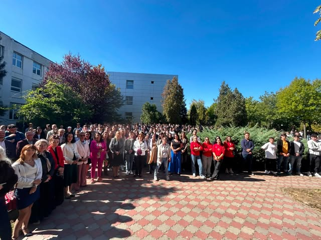
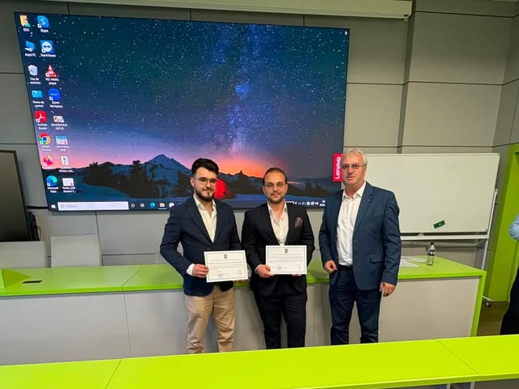
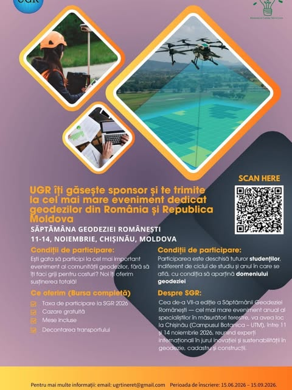
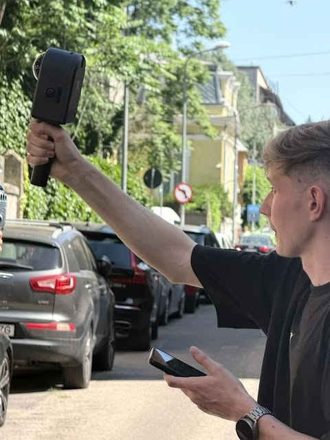
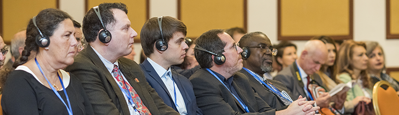
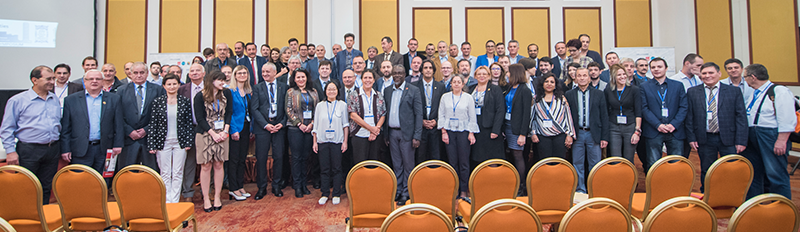
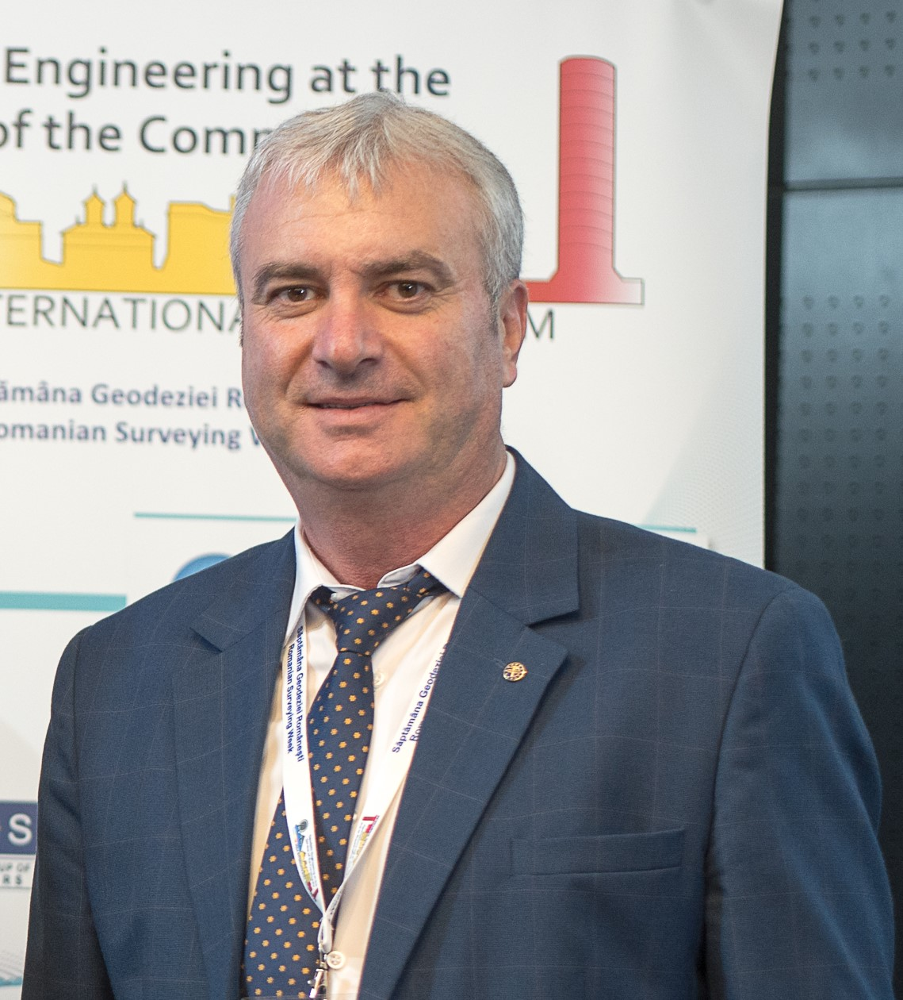
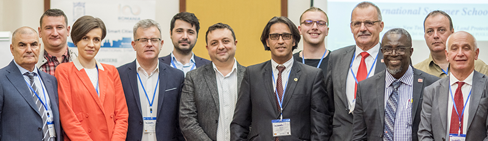
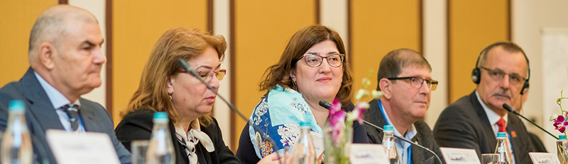
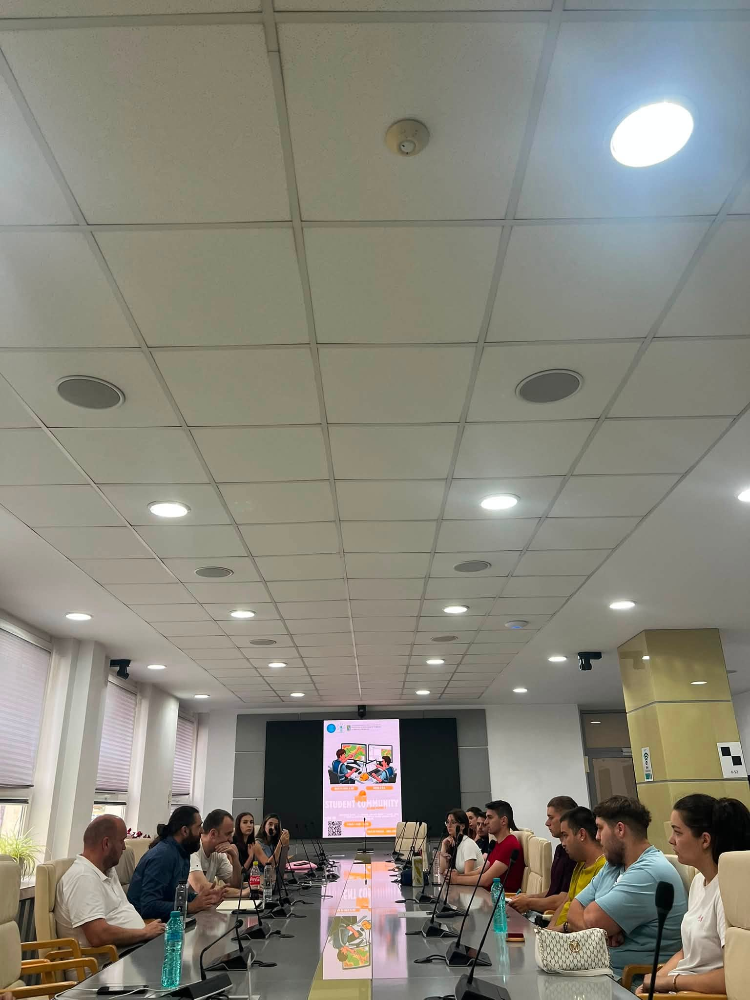

Rețeaua profesioniștilor care măsoară România.
Filiala Sector 1 București a Uniunii Geodezilor din România (UGR Național — asociația profesională fondată în 1990) reunește ingineri geodezi, topografi autorizați și cartografi într-o structură națională unitară dedicată preciziei matematice, integrității profesionale și dialogului legislativ permanent cu ANCPI și OCPI București.
Nod strategic național și pol legislativ al Capitalei: Filiala Sector 1 reprezintă comunitatea geodezilor autorizați din București în parteneriat tehnic-legislativ direct cu ANCPI și OCPI București.
Integritate terestră, viziune spațială.
Uniunea Geodezilor din România (UGR) reprezintă autoritatea profesională independentă a inginerilor măsurătorilor terestre. Ne asigurăm că normele profesionale, etica de lucru și reglementările administrative încadrează corect profesia de geodez autorizat, garantând rigurozitate tehnică în toate lucrările de infrastructură națională și cadastru general.
Alătură-te breslei profesionale a geodezilor
Completează formularul digital în doar 2 minute pentru înregistrare ca membru.
O istorie marcată de excelență
Organismele și evoluția completă a Uniunii Geodezilor de la evenimentele fondatoare din 1990 încoace.

Parcursul evolutiv complet
Fondarea Uniunii la București
În primăvara anului 1990, un grup entuziast de specialiști reuniți la Facultatea de Geodezie din București decide înființarea unei uniuni profesionale a geodezilor, stabilind bazele organizatorice ale asociației.
Perioada de consolidare și extindere
Sub președinția lui Săvulescu și conducerea activă, numărul membrilor crește semnificativ, ajungând de la 400 la peste 2.500 de specialiști. Această etapă este marcată de apariția și publicarea regulată a Revistei de Geodezie, Cartografie și Cadastru.
Aderarea internațională oficială
UGR devine un reprezentant de referință la nivel internațional, fiind afiliată activ la Federația Internațională a Geodezilor (FIG) și la Consiliul European al Geodezilor (CLGE), preluând bunele practici tehnice și etice europene.
Protocolul istoric cu ANCPI
Uniunea semnează un protocol de colaborare strânsă cu Agenția Națională de Cadastru și Publicitate Imobiliară. Revista de profil este relansată în limba engleză pentru a oferi vizibilitate cercetării din România.
Proiectul Legii Geodezului
Se elaborează și se depune la comisiile de specialitate ale Camerei Deputaților proiectul legislativ istoric privind organizarea și exercitarea profesiei de geodez autorizat în România.
Alegerea noii conduceri și relansarea SGR
Pe 10 iunie 2022 se alege o nouă structură a Biroului Executiv. În același an, evenimentul fanion Săptămâna Geodeziei Românești este relansat cu un succes de răsunet la Brașov.
Săptămâna Geodeziei Timișoara & Filiala UTM
UGR organizează cea de-a VI-a ediție a Săptămânii Geodeziei la Timișoara în parteneriat cu universitățile de profil și marchează înființarea istorică a filialei transfrontaliere la Chișinău (UTM), extinzând comunitatea geodezică.
Consiliul și Biroul Executiv

Ing. Mircea Afrăsinei
Coordonator general și reprezentant legal al Uniunii.
Prof. univ. dr. ing. Ana Cornelia Badea
Responsabil de parteneriate academice și publicații științifice.
Prof. univ. dr. ing. Petre Iuliu Dragomir
Responsabil de dialog legislativ și relația cu ANCPI.
Ing. Vlad Păunescu
Ing. Costin Sebastian Manu
Gestiunea financiară a Uniunii.
Vicepreședinți regionali (mandat 2022–2026)
Sursă: Conferința Națională UGR, 10 iunie 2022.
Consiliul de Conducere — Filiala Sector 1 București
Structură Locală TeritorialăConducerea executivă a Asociației Locale UGR București Sector 1 (aleasă conform statutului).
Obiectivele Uniunii
Statutul Uniunii Geodezilor din România
Aprobat în data de 24 noiembrie 2017
Articole și Evenimente Tehnice
Păstrează legătura cu modificările legislative din geodezie, congresele internaționale UGR și activitățile Filialei Sector 1 București.

Calendarul Evenimentelor & Jaloanelor UGR 2026
Sesiuni operative, consultări instituționale, parteneriate academice și congrese internaționale de referință.
Săptămâna Geodeziei Românești (SGR) — Chișinău 2026
Cel mai important congres științific și profesional al anului, găzduit de Universitatea Tehnică a Moldovei (UTM). Reuniune strategică la nivel înalt cu ANCPI, ARFC, FIG și CLGE, sesiuni tehnice de comunicări și expoziție de tehnologii geodezice de vârf.
Deschiderea Anului Universitar FIFIM USAMV București
Consolidarea punții dintre mediul universitar și practica profesională autorizată. Filiala Sector 1 sprijină noile generații de ingineri geodezi prin stagii de practică, mentorat direct și acces la comunitatea tehnică UGR.
Gala Premiilor de Excelență MTC & Pachetul de 18 Workshopuri
Premierea celor mai merituoase lucrări de licență și disertație, însoțită de lansarea unui program intensiv de 18 workshopuri tehnice specializate în tehnologii de scanare laser 3D, fotogrammetrie cu drone și cadastru sistematic în parteneriat cu KarmaCad Store și SphereFix.
Masă Rotundă Tehnică: Filiala Sector 1 & Conducerea BCPI Sector 1
Consultare operativă directă privind optimizarea fluxurilor electronice din platforma e-Terra, clarificarea normelor de recepție a documentațiilor cadastrale și scurtarea timpilor de soluționare a dosarelor pentru geodezii autorizați.
Adunarea Generală a Asociaților CLGE & Reuniunea de Primăvară
Reprezentarea oficială a Uniunii Geodezilor din România în Consiliul European al Geodezilor (CLGE). Alinierea standardelor profesionale naționale la bunele practici europene și susținerea mobilității inginerilor geodezi.

Eveniment Tehnic Festiv: Ziua Geodezului Român
Marcarea contribuției esențiale a inginerilor geodezi la marile proiecte de infrastructură națională. Dezbateri consultative privind statutul profesional, digitalizarea cadastrului și proiectul noii Legi a Geodezului.
Registrul Geodezilor & Ghidul de Aderare
Evidența membrilor acreditați UGR și procedura completă de înscriere conform normelor statutare oficiale de pe ugr.ro/cum-devin-membru.
Devino Membru al Filialei Sector 1 București
Bucură-te de recunoaștere națională, asistență tehnico-juridică la BCPI Sector 1, reduceri la cursurile de perfecționare și vot statutar în adunările generale UGR.

Cum Funcționează Apartenența: Înscriere Locală cu Voce Națională
Geodezii autorizați și societățile de profil care activează în Sectorul 1 se înscriu direct în Filiala Sector 1 București. Prin această aderare teritorială, membrii dobândesc automat calitatea de membru deplin al Uniunii Geodezilor din România (UGR Național), participă cu drept de vot la Adunările Generale Locale, aleg conducerea filialei și mandatează delegații locali pentru forul național. Totodată, Filiala Sector 1 colectează blocajele tehnice din BCPI Sector 1 și le înaintează către Biroul Executiv (BEX) pentru susținere directă în fața ANCPI.
Procedura Oficială de Aderare în 4 Pași
Descarcă și completează formularul tipizat oficial pentru persoane fizice sau societăți comerciale.
Anexează copia actului de identitate, diplomă de licență (geodezie/topografie) și certificatul ANCPI.
Achită taxa de înscriere (50 lei) și cotizația anuală (100 lei activi / 10 lei studenți) prin virament bancar.
Dosarul este validat în ședința Biroului Executiv și se eliberează legitimația oficială cu număr național.
Categorii de Membri & Grilă Cotizații Anuale
| Categorie Membru | Taxă Înscriere | Cotizație Anuală | Drepturi Statutare & Beneficii | Validare Dosar |
|---|---|---|---|---|
|
Membru Titular
Inginer geodez autorizat ANCPI
|
50 LEI | 100 LEI / AN | Drept de vot în Adunarea Generală, reprezentare la OCPI/ANCPI, legitimație oficială UGR, reduceri congrese FIG/CLGE. | Biroul Executiv (BEX) |
|
Membru Student
Studenți și masteranzi (UTCB, UTM Chișinău, FIFIM)
|
10 LEI | 10 LEI / AN | Acces liber la conferințe naționale, stagii de practică la birouri membre, participare SGR Chișinău 2026. | Secretariat Filială |
|
Membru Corespondent / Firmă
Societăți comerciale de geodezie și cadastru
|
100 LEI | DIFERENȚIATĂ | Promovare în Registrul Firmelor Partenere UGR, consultanță juridico-tehnică în proceduri cadastrale complexe. | Consiliul Național |
Registrul Membrilor Autorizați UGR
| Nr. Legitimație | Nume & Prenume | Filială / Județ | Autorizație ANCPI | Status |
|---|
Formulare Tipizate de Înscriere (Descărcare Gratuită)
Întrebări Frecvente & Secretariat
Răspunsuri oficiale la întrebările membrilor, inginerilor geodezi și studenților privind înscrierea în UGR, spețele la BCPI Sector 1 și activitățile profesionale.
Unde vă adresați?
Pentru a primi un răspuns rapid, verificați dacă speța dumneavoastră ține de competența teritorială a Filialei Sector 1 sau de nivelul național al Sediului Central UGR.
Spețe Locale, BCPI Sector 1 & FIFIM
- • Întârzieri sau sesizări tehnice privind dosarele depuse la BCPI Sector 1 (e-Terra);
- • Avize de urbanism și documentații topografice în raport cu Primăria Sectorului 1;
- • Dosare de aderare pentru ingineri cu domiciliul sau sediul profesional în Sectorul 1;
- • Activități studențești, workshopuri și stagii de practică la FIFIM USAMV București;
- • Confirmarea plății cotizației anuale la nivel de filială.
Politici Naționale, ANCPI & SGR
- • Dialog legislativ național cu ANCPI (propuneri modificare Legea 7/1996, Ordin 600/2023);
- • Înscrieri și lucrări pentru Săptămâna Geodeziei Românești (SGR Chișinău);
- • Reprezentare internațională în organizațiile FIG & CLGE;
- • Gestionarea Registrului Național al Geodezilor din România.
Date de Contact & Puncte de Întâlnire
Președinte: Alexandru Dorin PĂUN · 0726 390 774 / 0748 912 263
Secretar: Andra Teodora VIȘAN · 0764 572 874
Info Cotizații & Taxe: Camelia MATEI · 0722 684 104
Email: filiala.ugr.s1@gmail.com
Telefon: 0723 587 081 | Email: office@ugr.ro
Cod Fiscal (CIF): 6480330
Trimite un Mesaj Secretariatului
Pentru întrebări, spețe profesionale la nivel de Sector 1 sau informații privind înscrierea în asociație.
Social Media & Comunitate — UGR Filiala Sector 1
Urmărește canalele exclusive ale Filialei Sector 1 pentru inițiative universitare FIFIM, workshopuri profesionale și anunțuri operative ANCPI / e-Terra.